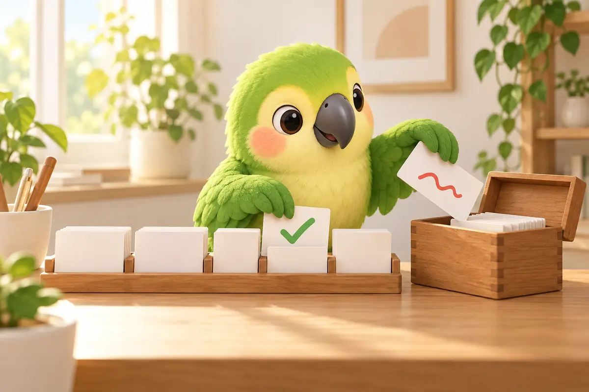
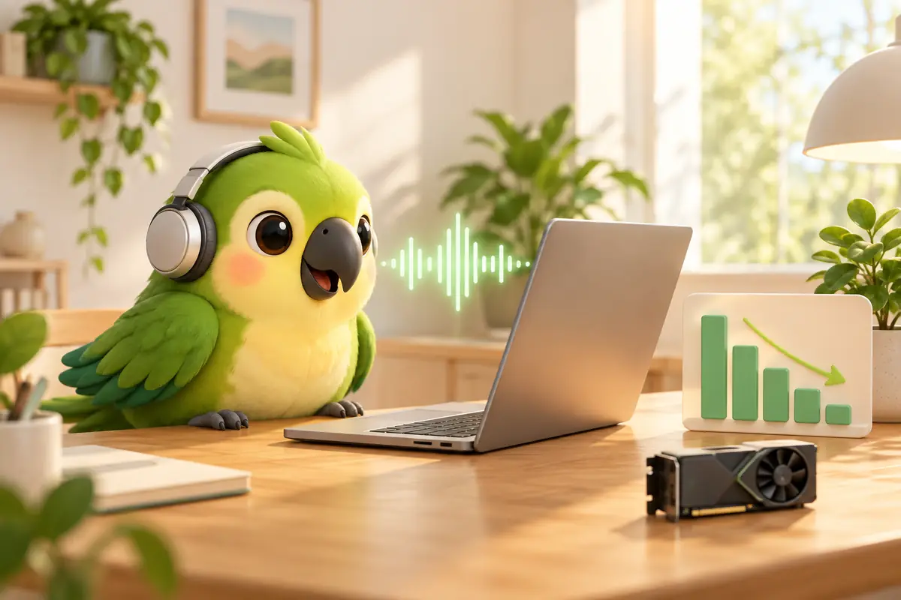

用 iPhone 相機掃描學舌鳥 iPhone 鍵盤 · NT$150 買斷
用 iPhone 相機掃描學舌鳥 iPhone 鍵盤 · NT$150 買斷
學舌鳥是本站自己的產品。文中的訓練數字是開發者用自己的聲音實測，只有一個人的資料，不代表每個人都會得到一樣的結果。功能說明以學舌鳥 0.4.13 為準。
1. 先看結論：錯在哪，就用哪一層
| 層次 | 適合修 | 在哪裡做 | 多快生效 | 修不了 |
|---|---|---|---|---|
| 第一層 個人詞典 | 固定的人名、產品名、英文縮寫，例如 Jmini → Gemini | Mac 本機，改完字後確認一下 | 下一句就生效 | 要看上下文的同音字（例如「在／再」）；根本沒聽出來的音 |
| 第二層 語氣提醒個人化 | 提醒太敏感，例如朋友互虧也被提醒 | Mac 本機，累積 20 筆回饋 | 訓練幾秒，通過驗證才採用 | 只調整要不要提醒，不改變辨識出來的字 |
| 第三層 專屬語音模型 | 常講的術語、口音、中英夾雜、同音字選錯 | 匯出資料，到有 NVIDIA 顯卡的電腦訓練，再匯回 Mac | 要準備錄音與訓練 | 聽別人說話會稍微變差 |
大部分人用前兩層就夠了。真的想再往下壓錯字，再考慮第三層。
2. 為什麼總是錯同幾個字
語音辨識分兩步：先把聲音轉成「聽起來像什麼音」，再從所有讀音相同的字裡挑一個最常見的。所以錯誤通常不是隨機的，而是固定出現在幾種地方：
- 不常見的名字：「王曉明」的「曉」不如「小」常見，模型就會一直選「小」。
- 產品名和英文術語：模型沒見過的詞，只能拼成讀音最接近的東西，例如 Gemini 被聽成 Jmini。
- 同音字：「我再看一次」和「我在看一次」讀音一樣，只能靠前後文判斷。
- 個人口音與連音：講太快、字跟字黏在一起時，第一步就已經聽錯。
前兩種在第一步其實聽對了，只是挑錯字，用詞典就修得好。後兩種要讓模型本身更熟悉你的聲音，詞典幫不上忙。
3. 第一層：個人詞典
最直接的做法，是把常聽錯的詞記下來：每次辨識完，把錯的寫法換成對的。學舌鳥的詞典在本機處理，不開 AI 也有效；如果你有開 AI 整理，也會把這些詞告訴它。
自動學詞典有個常見問題：你只是把整句話換個說法重寫，軟體卻以為是「聽錯」，把不相干的詞塞進詞典，後面越修越亂。學舌鳥的做法是：
- 先比讀音：你貼上後改了字，學舌鳥會比對改前改後的讀音。讀音相近的（例如「小明」→「曉明」）放進「個人化訓練」頁的確認清單；讀音差很多的歸在「換說法」，不會進詞典，也不會拿去訓練。分錯了可以按「其實是聽錯」或「不是聽錯，是我換說法」改回來。
- 你確認才算：清單裡按「加入詞典」，下一句就開始生效。
- 也能自己加：設定 → 詞典與紀錄 → 詞典 →「新增」，寫下正確寫法和常見錯法；也可以匯入 CSV（第一欄正確寫法、第二欄錯法）。

詞典修不了的：詞典是「看到 A 就換成 B」。「在／再」這種兩種寫法都對、要看前後文的字，不能直接替換；講太快而第一步就沒聽出來的音，詞典也找不到可以換的東西。這些要交給第三層。
4. 第二層：語氣提醒，在你的 Mac 上微調
用說的比用打的更容易帶情緒。學舌鳥內建一個約 11 MB 的中文語氣小模型（英文另有一個），在你的 Mac 上讀你剛說的句子和當下情境（在哪個 App、前面聊了什麼），一次判斷七件事：場景、對象、目的、要不要正式、語氣、要不要提醒、會不會太隨便。不需要 API key，也不連網。
但每個人的分寸不一樣。你跟十年的朋友說「你這白癡，又遲到了啦」，是日常打鬧；如果每次都跳提醒，很快就會想把它關掉。所以這一層可以用你的回饋來調整：
- 覺得提醒不對，就按「判斷不對」，或按「這個 App 不提醒」。
- 累積 20 筆就能訓練：到側邊欄「個人化訓練」頁確認回饋，在「語氣提醒個人化」按訓練。在這台 Mac 上幾秒完成，原本的模型不動。
- 沒通過驗證就不能採用：每 5 筆回饋留 1 筆不拿來訓練，專門用來檢查；另外還有內建檢查句，確認原本該提醒的句子沒有被放掉。沒通過的話，會告訴你這次訓練會讓原本判斷對的句子變錯。
- 隨時能還原：採用後留有版本紀錄，可以還原上一版或回到原本的模型。
要注意，這一層只影響語氣提醒，不會讓辨識出來的字變得更準。
5. 第三層之前：先做個人辨識健檢
在考慮訓練模型之前，先知道學舌鳥把你哪裡聽錯。設定 → 個人化訓練 →「朗讀錄音」就是個人辨識健檢：一輪 10 句、約 2 分鐘，照稿念，每句念完就標出聽錯的字，一輪結束告訴你錯字率。
如果標出來的字跟原稿讀音一樣，代表是學舌鳥選錯字，不是你念錯，這類錯通常可以用詞典或專屬模型改善。這些錄音的答案是對的（就是你念的稿），會一直留在你的 Mac 上，直到你自己刪除，之後也能拿來訓練。
6. 第三層：專屬語音模型實測
學舌鳥預設的語音辨識模型是 SenseVoice Small。我們用開源的訓練工具包 parroting-asr-training，以 LoRA 微調，只訓練約 2% 的參數，拿開發者自己的聽寫錄音實測。考卷都是訓練時沒看過的錄音。
訓練工具包實測（2 小時日常聽寫，考卷 263 段）
| 模型 | 錯字率 |
|---|---|
| 原本的模型 | 6.7% |
| 訓練第 1 次 | 4.7% |
| 訓練第 2 次 | 5.5% |
錯字少了 2～3 成，最明顯的是常講的人名、產品名和夾雜的英文。但同樣的錄音練兩次，結果差了快一個百分點。原因是這兩次的「答案」是模型自己聽的，本身就有錯，練出來的結果會有起伏。這也是為什麼訓練完一定要拿沒看過的錄音考一次，再決定要不要用。
更早的實驗：錄音變多，進步卻很小
更早的兩次實驗，答案是用幾個模型互相比對、再交給 AI 裁判挑出來的，同樣沒有經過人工確認：
| 模型 | 訓練錄音 | 錯字率 |
|---|---|---|
| 原本的模型 | — | 約 5.0% |
| 第一版 | 約 30 分鐘 | 約 3.6% |
| 第二版 | 約 2 小時 | 約 3.4% |
錄音多了 4 倍，錯字率只再降 0.2 個百分點。我們的結論是：答案正確，比錄很多更重要。朗讀錄音和你確認過的修正，答案是對的，是最好的訓練素材。

代價與踩過的坑
- 聽別人會變差：在通用的測試集（FLEURS）上，第一版的錯字率只多了約 0.2 個百分點，第二版多了約 1.2 個百分點。模型越熟悉你，聽一般人說話就越差。這是你自己的 Mac，通常划算，但要知道有這個代價。
- 英文字被打成兩次：第一版有個副作用，英文詞會重複，例如 Google 變成 Googlegle、email 變成 emailmail。第二版就少很多了。訓練完除了看錯字率，也要實際用幾天，看有沒有新的怪毛病。
- 答案要用簡體：我們試過直接用繁體答案訓練，模型越練越差。SenseVoice 的詞表以簡體為主，所以工具包會自動把答案轉成簡體；學舌鳥輸出時會再轉回你用的字（例如繁體台灣用字）。
7. 想自己訓練：流程與注意事項
學舌鳥本身不訓練語音模型，訓練在你自己有 NVIDIA 顯卡的電腦上做。聲音一樣不會上傳到我們這裡。
- 準備錄音：至少 20～30 分鐘有正確文字的錄音。朗讀錄音最可靠；確認清單裡確認過的修正也算，但要還留著錄音才能匯出。學舌鳥預設只留最近 300 段，想多留可以到設定 → 進階 → 歷史 →「錄音保留多久」調長。
- 匯出：設定 → 詞典與紀錄 → 資料存放位置 → 我的資料 →「匯出訓練資料…」（朗讀錄音卡片上也有）。
- 訓練：用 parroting-asr-training（MIT 授權，說明為英文）。需要 Linux 或 Windows 的 WSL2，8 GB 顯卡就能跑；RTX 4090 約 8～9 分鐘。只用 CPU 也行但很慢：90 分鐘的錄音，16 核心每輪約 50 分鐘。工具包訓練完會在考卷上比較前後，報告直接寫「Use it」或「Don't use it」。
- 匯回學舌鳥：設定 → 說話 → 語音模型與語言 →「管理模型」→「匯入模型…」。學舌鳥會先用 Mac 內建語音念一句測試句，確認新模型讀得出字才會加進清單。
- 比較前後：「管理模型」視窗最上面的「用你的朗讀錄音測一下」，只用朗讀錄音裡留作考卷的那 1/5，訓練過的句子不會灌水。匯入前後各測一次。不滿意就按「切回標準版」。
8. 常見問題
個人詞典和語氣提醒個人化需要顯卡或網路嗎？
不需要。這兩層都在你的 Apple 晶片 Mac 上完成，不需要網路、API key 或顯卡。只有第三層的專屬語音模型，要在有 NVIDIA 顯卡（或很有耐心的 CPU）的電腦上訓練。
我的錄音會被上傳嗎？
不會。學舌鳥的錄音、語音辨識、詞典與語氣個人化都在你的 Mac 上進行。只有你自己按「匯出訓練資料…」，檔案才會離開學舌鳥，去哪裡由你決定。
不訓練專屬模型，學舌鳥也會越用越準嗎？
會。詞典確認後下一句就生效，人名、產品名這類固定的錯最常見，也最容易修。可以先做一輪 2 分鐘的朗讀錄音，看看錯字率和錯在哪，再決定要不要往第三層走。
訓練專屬模型要準備多少錄音？
至少 20～30 分鐘有正確文字的錄音。我們的實測顯示，答案正不正確比錄音多寡更重要：錄音多了 4 倍，錯字率只再降 0.2 個百分點。
練壞了怎麼辦？
語音模型在「管理模型」按「切回標準版」就回到原本的模型；語氣提醒個人化採用後也能隨時還原上一版或回到原本的模型。